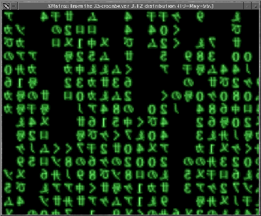
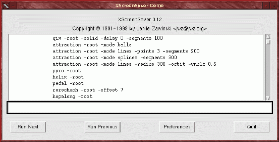
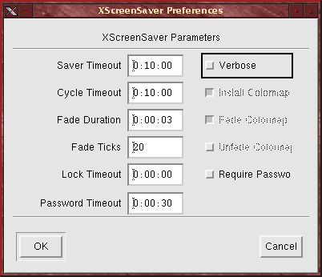

muse:
- v; to become absorbed in thought
- n; [ fr. Any of the nine sister goddesses of learning and the arts in Greek Mythology ]: a source of inspiration
|
muse:
|
 |
|
|
I've been working on some extensions and updates to my XNotesPlus program this month, which I've had to work on in between the Muse, TheGimp.com, and a number of articles and cover art work for the Linux Journal. Suprising how busy I'm keeping considering that, officially, I'm unemployed. Part of the work I was doing this month for both the Muse and TheGimp.com wasn't for this months issues. I was preparing for some future articles, ones which require more than the usual week and a half I spend on them for normal issues. That led to an even more compressed time frame for this months Muse. Running on a bit of brain strain, I opted for a little brain stimulus, or rather eye stimulus. That, and a little followup to last months issue, which brought in quite a bit of email. That, too, was a bit suprising. But very welcome. In this months column you'll find:
|
|
J-Dog - May 19th 1999, 10:16 EST RealPlayer for Unix allows
you to play streaming audio and video over the Internet in real-time.
The Linux Image Montage Project pre-1120 Jordan Husney - May 17th 1999, 07:15 EST The Linux Image Montage Project ("LIMP"), is an attempt to distill the Linux community's spirit down into one cool looking poster using user-contributed images and the GIMP. Changes: Now 70% complete,
only 480 image to go until project completion.
|
||||
IBM Visualization Data Explorer
Source Code Made Available to Developer Community.
http://www.research.ibm.com/dci/software.html
http://www.research.ibm.com/dci/dx_release.html
ImageMagick (TM) is a package for display and interactive manipulation of images for the X Window System. It is written in C and interfaces to the X library, and therefore does not require any proprietary toolkit in order to compile. Although the software is copyrighted, it is available for free and can be redistributed without fee. ImageMagick is known to compile and run on virtually any Unix system and Linux. It also runs under Windows NT, Windows 95, Macintosh, and VMS.
Changes: Many new features
and bugfixes, see the Changelog for more information.
http://www.wizards.dupont.com/cristy/ImageMagick.html
IPAD is an intelligent vector drawing package built using the multiplatform IPAD-Pro core and so provides a very powerfull consistant interface across all supported platforms without the need to have X11 or MS Windows available. It allows easy editing across files using multiple overlapping windows. The graphics objects drawn and edited by IPAD have built in intelligence. They react to the mouse and each other so as to maximise user productivity and reduce tedious repetitive setup sequences.
Changes: Faster character
drawing under X11, new grid support, new guide line support, new window
manager dialog and much more info in file selector.
http://www.demon.co.uk/titan/
The Image::Grab Perl module allows you to easily grab an image with an oft-changing URL from the internet. This makes it possible to write simple scripts to download weather maps or comic strips on a daily or hourly basis without user intervention. It is also useful for bypassing advertising banners.
Changes: Updated the realm
code so that HTTP authentication actually works, changed the interface,
but if you tried to use the realm call before, you should have gotten an
error.
http://everybody.org/mah/hacks/Image-Grab-0.9.3.html
Panorama is a framework for 3D graphics production. It will include modelling, rendering, animating, post-processing, etc. There's currently no support for animation, but this feature will be added soon.
Changes: Added a new text
image filter, a new configuration file, and documentation. Lots of bug
fixes.
http://www.gnu.org/software/panorama/panorama.html
Sketch is a drawing program similar to CorelDraw or Adobe Illustrator. It is written almost completely in python with some modules written in C, thus combining the flexibility and power of Python with the speed of C. Advanced features include gradient fills, clip masks, text along a path, blend groups, convert text to curves, and more.
Changes: First stable release.
Includes some national language support, improved Illustrator filters and
bug fixes.
http://www.online.de/home/sketch/
FFTW is a fast C FFT library. It includes complex, real, and parallel transforms, and can handle arbitrary array sizes efficiently. FFTW is typically faster than other publically-available FFT implementations, and is even competitive with vendor-tuned libraries (benchmarks are available at the homepage). To achieve this performance, FFTW uses novel code-generation and runtime self-optimization techniques (along with many other tricks).
Changes: Fixed a problem
with our parallel MPI transform test programs under MPICH.
http://theory.lcs.mit.edu/~fftw/
LAGII lets you run AGI games natively under Linux. AGI games include the Sierra classics such as Kings Quest, Space Quest, etc. Most games don't work fully, but they work quite well most of the time.
Changes: Functional X11 driver
is nearly done.
http://www.zip.com.au/~gsymonds/LAGII/
This is the first alpha release of Glide 2 for the Banshee and Voodoo 3 cards. According to the author the Quake 3 test will run under it, your mileage may vary. As of now it will only do 3D full screen, windowed support will be included later. The author will be at Linux Expo till the 23rd and has said he will ignore all email during this period. Those in need of support are advised to use the 3dfx newsgroups.
Changes: This is the first
version of Glide for linux with support for the Voodoo Banshee and Voodoo
3 chipsets. This is still glide 2.x, glide 3 has not been ported to linux
as of yet
http://glide.xxedgexx.com/3DfxRPMS_vb_glibc.html
LibGGI is an attempt to unify all those graphical output systems that exist on Unix. It is a very fast, simple (ever tried to make a small graphics app directly in Xlib?) and lightweight interface layer, that allows you to run the very same binary on many different graphics subsystems like X, SVGAlib, Glide, etc. LibGGI will detect (or you can select, of course) the environment you are running in, and redirect its output as required.
Changes: Better autoconf
checking for some targets and other bugfixes, fbdev target uses acceleration
on kernel-native matroxfb, better mode-switching for non-kgicon fbdev drivers,
svgalib target enhanced, X target fixed for remote displays with different
endianness as well as small enhancements for LibGII (especially for the
Linux-Console input).
http://www.ggi-project.org/
...there is a story in EETimesOnline about ILM's camera work, including a mention of Linux.
http://www.eet.com/story/career/timespeople/OEG19990517S0023...and another on how working on special effects expose engineers to the hot technologies of the day.
http://www.eet.com/story/career/timespeople/OEG19990513S0020...there is a project online that aims to produce a short (10 minute) 3D animated movie using POV-Ray. The Internet Movie Project can be found at http://www.imp.org/
...RealPlayer is an SMIL (Synchronized Multimedia Integration Language) enabled player? SMIL is based on XML and was designed by the good people at W3C. Since SMIL is another text-based markup language, you can, as always, use any text editor to author SMIL files. If you're interested in other SMIL players and some links to some GUI based authoring tools, take a look at http://www.justsmil.com. So far, no authoring tools for Linux are listed, although I've sent email to the people working on GRiNS to ask if they plan on a Linux port (they are working on both IRIX and Solaris ports, so I'd think it wouldn't be a difficult port to Linux).
A: ImageMagick
has the command line tool convert that will convert between many
different file formats. One output format is raw CMYK. Keep
in mind that raw CMYK may not be quite right for print output - it doesn't
take into consideration display characteristics of either the monitor on
which you viewed the original or the device on which you'll be printing.
But it will probably be fairly close for many images.
See: http://www.wizards.dupont.com/cristy/www/convert.html
A: blah
First I'd like you to know that the only thing worth reading in the Linux Gazette (at least for me) is the Graphics Muse ^_^'Muse: I'm flattered, but I often read most of the rest of the Gazette myself. Larry Ayers and the other regular and guest writers tend to know a lot more about systems administration than I do, and I often find bits of very useful into there. I'm just the graphics guy.
Well, I use the GIMP everyday and I frequently use a file-manager to launch it associated with an image. I'd like GIMP to start only once. I'd like to launch it once and then, afterwards, launch another image and make it load by the first GIMP instance I launched. Any ideas ?'Muse: If you want to work on the new image interactively, then I can only think of one way to do it - Perl::Fu. But getting the Perl extension to work with the Gimp can take a bit of work. I'm going to do an article on it for the June issue of TheGimp.com (this month will be on Gimp 1.2 status). You can also take a look at the new O'Reilly text "Programming Web Graphics with Perl and GNU Software". There is a chapter on the Gimp which goes into a fair amount of detail on the Perl scripting interface for the Gimp.
The Perl extension has a server portion, so you could write a perl script to connect to the server and pass it the name of a plug-in and file that could be used to pop open a new image window for the currently running Gimp. It will even, I believe, launch the Gimp if its not already running.
I'm no Perl::Fu expert, however. This is just my impression of how things work.
Antti Huotari <ahuotari@cc.hut.fi> writes:
You said in your latest Graphics Muse column that Macromedia Flash 3 runs only on non-Linux systems. Well, infact it does run almost flawlessly on Linux with the latest WINE release (OK, it still has a few bugs, but you can create Flash movies, etc. with it).'Muse: Ok, I stand corrected. I just don't run WINE - I want these tools to run natively on Unix. I've been waiting 10 years (since working on the Dell Unix product) for applications to run natively on desktop Unix. So I guess that's why I didn't consider WINE.The following setup is used:
- RedHat-5.2
- Kernel-2.2.9
- Wine-990508
- Flash 3 is installed in Windows95 (dual boot)
I never have figured out how to do this, though. I mean, where do I get Windows95/98? You go into computer stores and all they stock is "Upgrades". No one sells a complete installation apparently. Not that I've looked too hard.
Just to let you know,'Muse: I appreciate the feedback. I'm sure there are qutie a few readers who would love to know this works.
PS. Thanks for the nice book about Gimp.'Muse: Your quite welcome. I'm glad you find it useful!
Antti Huotari <ahuotari@cc.hut.fi> followed up with:
Just to clarify things, Wine+Flash3 isn't ready for production yet. For example the text tool doesn't work and there are lots of little problems. But like I said you can play, create movies with it, etc. Sound effects seem to work fine too. And it gets better with every new release of Wine.'Muse: I'll post this too. Its good info. I'm sure it will help keep expectations in line for anyone who tries it.
From www.winehq.com:'Muse: Hmmm. I didn't realize that. I guess I could try it eventually. I just hate using any MS-based tools. But I should open my mind to different options. It is, after all, part of my own preachings to people: Choice. Thats the key.
Wine is an implementation of the Windows 3.x and Win32 APIs on top of X and Unix. (So it isn't an emulator and you don't need Microsoft Windows.) Wine consists of a program loader, which loads and executes a Windows binary, and a library that implements Windows API calls using their UNIX or X11 equivalents.
But, I do agree with you that it would be much better to have applications that are especially made for *NIX.'Muse: It's happening. Slowly, but I think it's an inevitable process at this point. I'm looking forward to the ports of graphics applications that I'm sure we'll be hearing about over the next 6-12 months.

Other than that, I only came up with one Web-related item: After a couple of years of wondering how to make this work, I finally figured out how to force text to flow around a table. I like to use tables to place an image with a caption below it, image in the top cell and the caption in a cell below it, but I've always been stuck with shoving text into a cell in the table - I couldn't just have text flow around the table like I do with non-tabled images.
Well, it seems that my use of Netscape Composer had led me to ignore checking the completeness of the HTML it created. I was perusing some other sites on the net - I think it was the BBC news site - and saw one with a configuration just like I wanted to make: image in a table, caption below it, text flowing around it to the right. I looked at the HTML and didn't see anything special. So I copied everything from that site's table to one of my own, then started removing items one at a time to find the key element. The key, it seems, is the ALIGN= argument.
It is possible to make text flow around a table, but not directly with Composer. Composer, although it provides a toggle for the Align argument, doesn't actually place this argument in the TABLE tag if you use the default option of "Left". Arrgghh! You have to edit the TABLE tag and add the ALIGN=LEFT by hand. So, configure your text editor in Netscape. I use vi (if you use Emacs there is a good chance you're not using Composer anyway). You'll want to create the table first, just as always. Make the table just a bit wider than the image and leave the image left aligned in it's cell (which leaves space between the image and the text that will flow around it). Then add your text. Later, go back and edit the HTML by hand (Edit->HTML Source) and add the ALIGN=LEFT argument to your table. Viola! Right-side flowing text around your tables. This modification will stay as long as you don't edit that table again. If you do make changes to the table, you'll have to go back and add the ALIGN=LEFT argument by hand again.
I guess it helps to check these automated contraptions every now and then - just to keep them honest.
Oh, and as to why this was
titled "blah": that's the text placeholder in the template file I
use for the main page of the Graphics Muse. It seemed appropriate.
The alternative was "Yada Yada Yada", but I wasn't sure how many Seinfeld
fans there were reading the Muse.
 |
|
In the world of graphics tools for Linux there are probably several programs (we can't really call them tools, per se) that could be considered just fun. No, I don't mean games. That's entertainment. Despite what you read in the press or hear from politicians, games are not completely mindless jaunts for the juvenile crowd. No, we need something that has nothing to offer but stunning visual preoccupation.
Thank goodness for screensavers.
Watching the ever streaming line of announcements over at freshmeat, I noticed an announcement for something called cmatrix. It was said to be a screensaver in the style of The Matrix, that wonderfully confusing cinema fantasy starring Keanu Reeves. Unfortunately, it's not an X-based program. It runs under Curses, a terminal based graphical interface. Then I saw that Jamie Zawinsky, late of Netscape, had added a Matrix hack to his xscreensaver program. So I scrounged around a bit and found xscreensaver, downloaded it and put it to work.
Cool.
|  |
|
|
I don't usually run screensavers, a screen blanking or energy-saving monitor suffices most of the time. But the shear number of hacks available for xscreensaver was somewhat astounding. I counted over 80 of these in the hacks directory. Jamie has screenshots for most of these on his xscreensaver Web site (http://www.jwz.org/xscreensaver/). Be warned: it can take quite a while to download the page with the screenshots if you're on a slow link. You don't really have to download the latest version from this web site since most Linux distributions will contain a version of xscreensaver already. But you might want to check to see if any new hacks have been added or if a new version is availalble. On my Red Hat 5.2 I had a considerably older version than the latest (3.12) posted on Jamie's site.
Since xscreensaver runs as a daemon and a client (the hack), you need to look at these seperately. The daemon, xscreensaver, has no user interface. It's configuration is controlled by a standalone client program called xscreensaver-demo.

xscreensaver-demo
If you don't have an $HOME/.xscreensaver file, then xscreensaver uses its default configuration. In this example case this means the demo window has all 80+ hacks available. This if fine for the demo, but when you put together a menu option for your favorite Window Manager to launch the screensavers, you may want to limit this list using your own configuration file. We'll talk about the configuration file a little later in this article.
The demo dialog allows you
to double click on an entry in the list of hacks to start it. To
stop the hack just move the mouse or click a mouse button once. This
is handy for looking through the list of hacks to see what they all do.
You can also type a hack command (the command uses ordinary command line,
aka shell, syntax) in the text field just below the list. The buttons
perform obvious functions - run the next hack in the list, run the previous
hack in the list, quit the demo program and open the preferences dialog.
Quitting will exit the demo window but does not kill off the xscreensaver
demo. You do that manually with the xscreensaver-command program's
-exit
option.
|  |
|
|
The Fade Duration is used only with writable colormaps. This causes the screen to fade to black when the screensaver starts or between hacks when cycling is enabled. Fade ticks controls how fast this fade should occur. Higher numbers make for smoother fades, but take longer to complete. Fading to black may not work with your hardware and X server configuration, so changes to this field may have no effect.
The Lock Timeout is the grace period after the screensaver has kicked in where no password is required, even if Require Password has been set. If this value were 5 minutes, for example, and the screensaver had only been running for 3 minutes before you typed something or moved the mouse, then you wouldn't have to type a password. Useful for those short periods you run to the bathroom and hate having to retype your password just to get going again.
Password Timeout is the time for which the password dialog will remain on the screen waiting for a valid response before it gives up and returns to the screensaver. In the example here, the dialog would be present for 30 seconds - ample time for a decent typist with the right password.
While the demo window and it's preference dialog allow you to configure how the daemon will run, it isn't really how you want to run xscreensaver in the background, say from a Window Manager menu. As mentioned earlier, another program is used to kill off the xscreensaver daemon - xscreensaver-command. This is a command line program designed to issue commands to the daemon without using windowing interface (although it can launch the Demo window too). A hack in the programs list of your configuration file can be called directly using the xscreensaver-command program. This is how I set up a menu under FVWM2 to specifically run the Matrix screensaver.
The .xscreensaver configuration file
All of the options you can set interactively with the Preferences dialog can also be set using the xscreensaver-command program. Alternatively, you can specify often used options in your .xscreensaver configuration file. We've already mentioned the programs entry, which is a list of programs to run in shell-syntax format. You list one program per line and use shell continuation marks, but cannot use semicolons. So, an entry like this
programs: \is invalid. Instead, you would enter it like this:
xmatrix; qix -root; xv -root -rmode 5 image.gif -quit
programs: \Each of these programs are found via your PATH environment variable, so if they aren't available from an ordinary command line, then you may want to fully qualify the path name.
xmatrix \n\
qix -root \n\
xv -root -rmode 5 image.gif -quit \n\
When you use xscreensaver-command to launch one of these programs specifically, you reference the program by the order in which it appears in the list. So xmatrix is program number 1, qix is number 2 and so forth. You can then invoke this screensaver directly using a command line like this:
% xscreensaver-command -select 1The -select option tells xscreensaver to blank the screen immediately and run the hack specified. There are variations on how you can do this using the xscreensaver-command program. Check the man page that comes with the source for complete details.
All of the options in the .xscreensaver configuration file use a name:token format. That is, you specify the name of the option, followed by a colon and the setting for that option. Since the configuration option uses the same option names as the X Resources file, you can also place these settings in your .Xdefaults file if you like. I prefer using program specific files like .xscreensaver because if I screw up that one file I don't take the chance of breaking some other program like I might if I used my .Xdefaults file instead.
[ More
Eye Candy ]

| Online Magazines
and News sources
C|Net Tech News Linux Weekly News Slashdot.org TheGimp.com General Web Sites
Some of the Mailing Lists
and Newsgroups I keep an eye on and where I get much of the information
in this column
|
Let
me know what you'd like to hear about!
![[ TABLE OF CONTENTS ]](../../gx/indexnew.gif)
![[ FRONT PAGE ]](../../gx/homenew.gif)